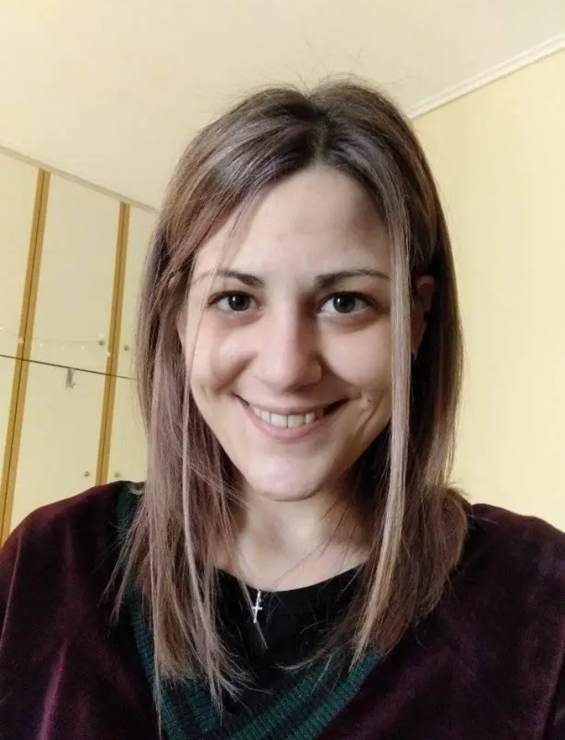

Maria Spanou
Work Experience
R&D Project Manager - SME's contract partner for EU Horizon Projects (March 2024-present)
- Leading two small agile teams for the development and deploying technical solutions
- Undertaking standardization background analysis and gap analysis for potential addition to current standardization effforts
Insurance Consultant - Exclusive partner of Allianz Trade Greece (February 2024-present)
Assistant Accountant & Account Manager - Melis Block S.A. (November 2022 - December 2023)
- Generating and issuing customer invoices accurately and in a timely manner. Performing account reconciliations and resolving discrepancies.
- Reviewing contracts and agreements to ensure billing compliance.
- Monitoring and tracking expenses, verifying and recording financial transactions, maintaining accurate and organized financial records and documentation.
- Monitoring logistics and liaising with the production manager to synchronize the production on time, aligning the best strategies to avoid waste of resources and time.
- Working closely with project managers on construction sites in order to ensure the stable flow of goods provided and keep up with the timeline.
- Identifying business needs and conducting research to promote new operational methods, liaising among the teams, and circulation of inner data of the company in order to maximize business success.
Assistant Manager - Copy Center Print shop (Mar.2018-May.2022)
- Reduced waste and pursued revenue development strategies to keep aligned with sales and profit targets. Managed overstocking, restocking, and inventory control procedures, pricing of goods, and managing invoices.
- Identifying weak spots and conducting research indicating the best strategies for problem-solving. Suggested budgetary changes to increase company profits as well as promoted social media presence.
- Actively promoted the provision of intangible services in a wider variety, increasing sector revenue by 40%.
- Established and kept up-to-date account charts to monitor accounts payable and receivable. Increased cash flow by 35% with an increasing trend by updating the payment tracking method of clientele overdue accounts and suggesting new payment strategies to both parties.
- Organizing and overseeing assignments to drive operational excellence. Established team priorities, maintained schedules, and monitored performance.
Education
Executive MBA in Financial Planning - University of Peloponnese (Ongoing)
- Side Project: Financial Analysis of Mazars S.A.
- Side Project: Strategic Management Analysis of ALUMIL S.A. and MELISSA S.A.
M.Sc. Economics, Defence and Security - University of Peloponnese (Oct.2022)
- Best academic performance:Managerial Economics and Leadership / Game Theory / Geopolitical and Strategic Intelligence Analysis
- Side project: Financial analysis of THEON SENSORS S.A.
- Master Thesis: “China’s new imperialism and its impact on the International System”
B.Sc. International and European Economic Studies - University of Macedonia (Oct.2016)
- Best academic performance:Business Administration/ Economic Growth / Negotiation and Crisis Management / Financial analysis / International Management / Law of International Transactions and Trade
- Selected for Delegation Team representing University at Model United Nations Barcelona
2011 as Vice President of ECOFIN.
Skills
- Financial Analysis
- Geostrategic Analysis (SWOT, PESTEL)
- Time Management (Eisenhower Matrix)
- Organizational Skills
- Corel Graphics Suite
- Languages
- Greek (Native)
- English (Professional)
- French (Conversational)
- Spanish (Basics)
- Turkish (Basics)
Online Courses and Specializations
Projects